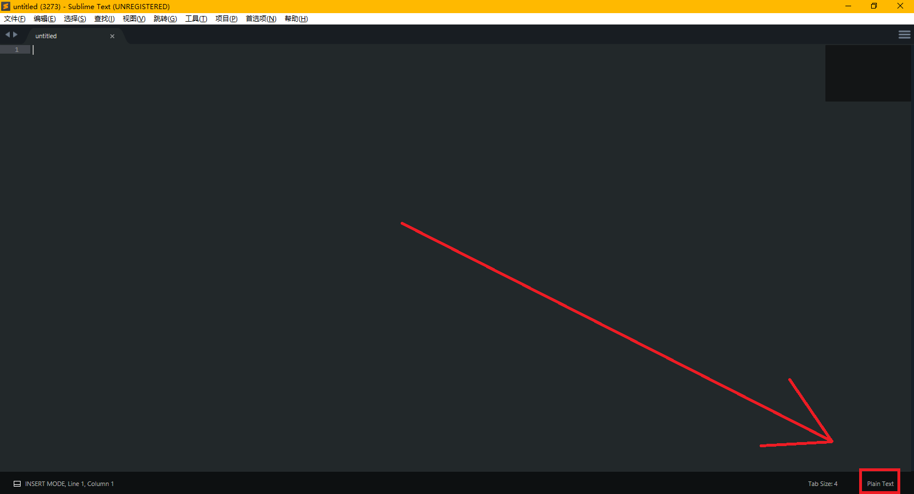

Sublime Text 3
简介¶
Sublime Text 3（以下简称 ST3）是一款轻量级的文本编辑器，支持多种语言的语法高亮及代码补全。具有高度的可拓展性以及 vim 模式。
ST3 相比于 ST2，性能大幅提升，安装插件也简单了许多。
安装¶
直接前往 官网 下载即可，如果使用搜索引擎，可能会搜索到中文官网，提供的安装包与英文官网是同一个链接。
ST3 的安装包并不会创建桌面快捷方式，需要自己手动创建。
Sublime 提示激活
ST3 是收费软件，但有一个无限期的试用，试用并不会带来功能上的缺失，但会不时弹出弹窗提示你激活。
安装插件与自定义¶
汉化¶
ST3 并不支持中文，需要安装汉化插件。
安装插件管理器¶
打开 ST3 后键入Ctrl+Shift+P唤出命令框，输入 Install 后回车（完整命令是 Install Package Control，不区分大小写），此时应该会看到左下角有一个 = 在不停的左右移动。等待 Package Control 安装完成，具体的加载时间取决于网络。
如果完成的弹窗显示安装失败（与网络有关），则需要手动下载 Package Control 并将下载好的文件放到 C:\Users\用户名\AppData\Roaming\Sublime Text 3\Installed Packages 中。稍作等待，ST3 会自动识别该插件。
安装汉化插件¶
再次按下Ctrl+Shift+P输入 Install 后回车（完整命令是 Package Contrl:Install Package），等待加载完成，接下来应该是这个界面：

输入 Chinese 选择 ChineseLocalizationgs 并回车，等待安装完毕，完成后界面会自动切换为中文。
调整字体¶
从安装汉化插件后弹出来的提示文件中，可以看出 ST3 的默认字体对中文的支持很差。
进入 首选项->设置，在右边的用户设置中的花括号中添加一行 "font_face": "字体名",，ST3 的设置使用 json 储存，应该比较好理解。修改完成后保存，如果系统安装了对应字体会自动切换。
Warning
注意不要在左边的的默认设置中修改，这是不被推荐的，如果软件更新，默认设置会被重置。
安装插件与主题¶
安装插件与主题的方法与安装汉化插件一致。
输入Ctrl+Shift+P输入 Install 后回车，然后搜索插件/主题/配色即可。
由于 ST3 主要面向网页前端开发，所以一般来说编辑 C++ 的情况下并没有太多很好的插件，不过一般来说自带的功能已经足够了。
插件推荐：
-
BracketHighlighter：对原版的括号高亮进行了增强。
-
C++ Snippets：ST3 自带有 C++ 代码补全，格式为大括号换行。如果不习惯大括号换行的码风可以安装这个插件，同时增加了少量补全。
-
C++ 11：支持 C++ 11 标准高亮。
-
SublimeAstyleFormatter：Astyle，用于格式化代码。
-
C++ Completions：提供与 ST3 自带补全不同的补全方式，但对 C++ 头文件的支持并不完全。
有其他需要可以自己尝试搜索。
一些主题：1
3024（单配色方案）、Grandson-of-Obsidian（单配色方案）、Seti_UI（单主题）、Material Theme、Predawn、Agila、Materialize。
如果要编辑自己的配色方案，可以访问 tmTheme Editor。
使用 vim！¶
开启方式¶
vim 作为一款编辑器，其效率高的特点可以说是众人皆知。
但 vim 的界面并不太友好，而且部分功能对于现代编辑器确实有些薄弱。
有没有什么现代编辑器可以支持 vim 的命令模式呢？
ST3 可以！
ST3 的 vim 模式由自带的插件 Vintage 提供，它默认是禁用的。可以通过 首选项->设置 在用户设置中，将 "ignored_packages" 一项中的 Vintage 删除并保存，ST3 的状态栏左边就会出现 INSERT MODE，这时就可以愉快的打 vim 了。
与真正 vim 的不同¶
ST3 的 vim 模式与真正的 vim 略有区别，以下为找到的部分（欢迎补充）：
- 在插入模式下用选中不会进入可视模式，这时输入不会被识别为命令而是直接替换文本。可视模式只有命令模式下才能进入。
r、R、zA、za、zi、z=、@与使用[、]或"键的命令不存在。- 使用Ctrl、Shift和Alt键的快捷键会保留为 ST3 设置的快捷键，如
Ctrl+V不会进入可视模式而是正常粘贴。 - 命令行模式只保留了
:e、:0、:$、:s。 - 使用
\与?命令会自动唤出搜索框，而不是直接在命令中键入单词进行搜索。同时，数字将无法生效。 q宏录制命令会启动 ST3 自带的宏录制，按q后需要再按一个键启动录制，但录制的宏不会与该键绑定，需要按Ctrl+Shift+Q才能启动。如果需要保存，需要工具->保存宏，快捷键需要设置。- 该插件的实现方式是通过修改快捷键，由于已经打包，所以如果是包含多个字符的命令无法进行设置。
让 ST3 更加 vim
从快捷键设置可以看出 ST3 的模式与 vim 很像，理论上只要至包含一个非控制字符的快捷键，可以大部分配置成 vim，但显然需要相当的耐心。
设置快捷键¶
在 首选项->快捷键设置 中设置，在左边找到自己需要修改的功能，然后复制到右边并修改按键即可。注意 ST3 的功能极多，不要与其他功能重复了，或者把重复的功能的快捷键也改掉。
编辑¶
设置语法¶
按右下角的 Plain Text 然后修改为你需要的语言即可。

快捷键¶
注意 ST3 有复合快捷键，如Ctrl+K&Ctrl+Backspace表示先按Ctrl+K再按Ctrl+Backspace，不要认为是两者都可以。
以及不要尝试用 vim 模式中的 j、k 命令代替上下来触发快捷键。
部分快捷键：2
| 按键 | 命令 |
|---|---|
| Ctrl+X | 剪切当前行 |
| Ctrl+Shift+K | 删除行 |
| Ctrl+Enter | 在下方插入行 |
| Ctrl+Shift+Enter | 在上方插入行 |
| Ctrl+Shift+Up | 行上移 |
| Ctrl+Shift+Down | 行下移 |
| Ctrl+L | 选择行，重复以向下选择多行 |
| Ctrl+D | 选择词，重复以选择多个相同词，并进入多点编辑（用于快速批量更改） |
| Ctrl+M | 跳转到匹配的括号 |
| Ctrl+Shift+M | 选择括号内的内容，重复以包括括号 |
| Ctrl+K&Ctrl+K | 删至行尾（复合快捷键，建议使用 vim 模式代替） |
| Ctrl+K&Ctrl+Backspace | 删至行首（复合快捷键，建议使用 vim 模式代替） |
| Ctrl+] | 缩进当前（选择的）行 |
| Ctrl+[ | 取消缩进当前（选择的）行 |
| Ctrl+Shift+D | 复制当前行，并插入在下一行 |
| Ctrl+J | 合并下一行与当前行 |
| Ctrl+Shift+V | 粘贴并缩进（用于整段粘贴代码） |
| Ctrl+K&Ctrl+Shift+V | 从历史粘贴（复合快捷键，建议修改为Ctrl+Alt+V） |
| Ctrl+Space | 选择下一个自动补全建议（与Down等价，注意是空格） |
| Ctrl+Alt+Down | 光标下移，并保留当前行光标（进入多点编辑模式） |
| Ctrl+Alt+Up | 光标上移，并保留当前行光标（进入多点编辑模式） |
| ~ | 转换选择内容的大小写 |
自动补全¶
ST3 有丰富的补全功能，可能的补全内容会在光标下方显示，按Tab（或Enter，但在编辑块中跳转仍需要Tab，所以不建议使用）进行补全。
补全后一般会选择一块区域进行编辑，编辑完成后再次按Tab进行下一个编辑块的编辑（for 循环等复杂代码可能有多个编辑块，需要按多次Tab）。
自动补全的风格无法调整，除非使用插件。
如果没有自动补全，请如下修复：
-
检查是否切换了语言，ST3 默认新建文件为 Plain Text。
-
进入
首选项->设置然后添上两行：1 2
"auto_complete": true, "auto_match_enabled": true,
编译与运行¶
ST3 的编译环境已经配置好了，可以直接使用。
Windows 环境下需要将 g++ 所在目录添加到环境变量中，并重启 ST3。
编译¶
直接按Ctrl+B编译，第一次使用会让你选择编译方式，选择 C++ Single File（编译）或 C++ Single File - Run（编译并运行）。
修改编译选项¶
虽然 ST3 自带编译环境，但不幸的是，编译选项无法修改。
如果需要修改编译选项，则需要自己新建一个编译系统。
进入 系统->编译系统->新建编译系统… 然后在大括号中间输入：
1 2 3 | "cmd": ["cmd","/c","g++","-Wall","${file}","-o","${file_path}/${file_base_name}","&&","cmd","/c","${file_path}/${file_base_name}"], //编译选项可以自己调整
"file_regex": "^(..[^:]*):([0-9]+):?([0-9]+)?:? (.*)$", //这一行可以让ST3图形化显示报错，如果习惯了看g++返回的信息可以去掉
|
保存后把编译系统切换到你自己写的这个，就可以使用了，这里的配置是在 ST3 窗口内编译并运行。
保存的文件为 C:\Users\用户名\AppData\Roaming\Sublime Text 3\Packages\User\编译系统名.sublime-build 可以反复修改。
其他配置方法
以下为满足各位的各种需要而写，可能需要掌握一些命令行的知识。
只编译
1 | "cmd": [“g++","-Wall","${file}","-o","${file_path}/${file_base_name}"],
|
在外部 CMD 运行
1 | "cmd": ["cmd","/c","g++","-Wall","${file}","-o","${file_path}/${file_base_name}","&&","start","cmd","/c","${file_path}/${file_base_name}& pause"],
|
还可以利用一些方法把编译和运行拆开并分别配置快捷键，由于并不必要，请自行搜索。
运行¶
如果编译时选择 C++ Single File - Run（或者自己配置了自动运行），那么在下方弹出的编译信息窗口可能不会有任何显示，因为 ST3 的编译信息窗口兼职 CMD，此时它在等你给正在运行的程序输入数据。
运行结束后会提示程序的运行时间。
为什么感觉时间多了？
注意这个时间是从按下Ctrl+B到程序结束的时间，也就是说包括编译的时间和输入的时间，以及如果在外部 CMD 运行还包括 CMD 开启关闭的时间，总之确实不太准。
Warning
这个窗口无法输入F6或Ctrl+Z，如果运行读入到文件末尾的程序请使用文件输入，或使用上面「其他配置方法」中写的方法在外部 CMD 运行。
调试¶
可以安装插件使 ST3 支持 gdb 调试，但不建议依赖插件进行 gdb 调试。
更好的做法是在配置编译系统时加上相关命令启动 gdb，在外部进行命令行调试。
杂项¶
-
把文件夹拖进 ST3 中并开启侧边栏，从而快速切换文件。
-
善用跳转功能，尤其是Ctrl+P进行文件跳转与Ctrl+R进行函数跳转。
-
ST3 支持 git。
外部链接¶
参考资料与注释¶
build本页面最近更新：，更新历史
edit发现错误？想一起完善？ 在 GitHub 上编辑此页！
people本页面贡献者：OI-wiki
copyright本页面的全部内容在 CC BY-SA 4.0 和 SATA 协议之条款下提供，附加条款亦可能应用